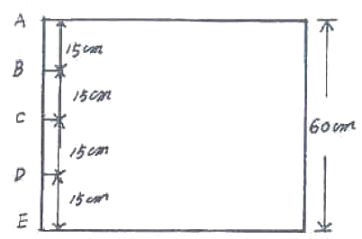
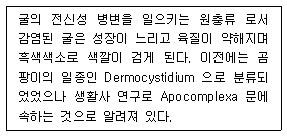
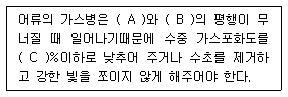

수산양식기사 (2010-07-25 기출문제)
1과목: 어류양식학
1. 잉어치어 100kg을 방양하여 100일 사육 후 500kgdl 되었다면 일간 성장률(%)은?
- 1.33
- 1.66
- 0.33
- 2.00
(정답률: 52%)

2. 다음 중 어류의 성숙촉진 또는 산란유발과 가장 거리가 먼 것은?
- 간출(노출)자극
- 수온 상승 자극
- 광주기 조절 자극
- 뇌하수체 전엽 호르몬 주사
(정답률: 83%)
3. 조피볼락에서 먹이를 처음 공급하는 시기는?
- 출산 직후
- 출산 5일 후
- 출산 19일 후
- 출산 30일 후
(정답률: 85%)
4. 넙치의 먹이공급에 대한 설명 중 틀린 것은?
- 부화 후 10일까지의 자어에게는 주로 로티퍼를 먹이로 준다.
- 부화 10일 이후로는 주로 알테미아를 준다.
- 치어기 먹이로는 크릴, 바지락 또는 어패류의 살등을 주어도 된다.
- 치어기에는 먹이를 하루에 1~2회, 성장하면 3~4회정도로 준다.
(정답률: 74%)
5. 종묘 생산 시 어미의 계통에 따라 100% 수컷이 생산될 수 있는 종은?
- 잉어
- 붕어
- 뱀장어
- 틸라피아
(정답률: 92%)
6. 뱀장어에 관한 내용 중 틀린 것은?
- 실뱀장어는 1kg당 약 6000~8000마리 정도이다.
- 실뱀장어는 연안에서 부화되어 소상한다.
- 뱀장어는 수온 25~30℃정도에서 활발하게 먹이를 먹고 자란다.
- 뱀장어는 강하성 어류이다.
(정답률: 60%)
7. MP사료에 대한 설명 중 틀린 것은?
- 대상어의 영양요구에 알맞게 각종원료 및 부족한 영양소 등의 정량적인 배합이 불가능하다.
- 물에 뜨기 때문에 사료의 허실이 적고 관찰이 용이하다.
- 적정크기로의 성형이 가능하고 어류의 기호성이 좋다.
- 장기보관이 어려우며 수질 악화 우려가 높다.
(정답률: 69%)
8. 먹이생물이 갖추어야 할 조건이 아닌 것은?
- 적정한 크기 및 모양을 갖추어야 한다.
- 영양성분이 확보되어야 한다.
- 대량 배양이 용이해야 한다.
- 빠른 운도성을 가져야 한다.
(정답률: 90%)
9. 검둥 뱀장어의 크기는?
- 0.15g 전후
- 5~10g
- 0.2~2g
- 50~100g
(정답률: 82%)
10. 다음 중 불포화 지방산에 속하는 것은?
- 라우르산(lauric acid)
- 미리스트산(myristic acid)
- 스테아르산(stearic acid)
- 디에치치에이(DHA, Docosahesaenoic acid)
(정답률: 87%)
11. 넙치 난의 특징이 아닌 것은?
- 분리부성란이다.
- 완숙시 알지름은 0.94~0.98mm 정도이다.
- 유구는 1개이다.
- 난은 갈색을 띤다.
(정답률: 75%)
12. 일반적인 어류 양식사업의 전체 운영경비 중에서 가장 큰 비중을 차지하고 있는 것은?
- 인건비
- 종묘구입비
- 시설관리비
- 사료비
(정답률: 73%)
13. 숭어의 분포지역으로서 옳은 것은?
- 우리나라 근해
- 극동지역 전 연안
- 전 세계의 열대 및 온대 연안
- 태평양 연안
(정답률: 83%)
14. 은어의 양식에서 사료 공급 시의 주의 사항과 가장 거리가 먼 것은?
- 여름철에는 사료의 변질 우려가 있으므로 한꺼번에 구입하지 말아야 한다.
- 수온이 26℃ 이상으로 올라가면 한 낮에 사료를 최대로 공급하여 성장속도를 높인다.
- 배합사료 공급 시 5% 정도의 피드오일(기름)을 첨가한다.
- 자동사료 공급기를 사용하더라도 공급량의 과부족을 관찰한다.
(정답률: 87%)
15. 자주복 알의 부화적온 범위는?
- 8~10℃
- 11~14℃
- 15~19℃
- 20~24℃
(정답률: 63%)
16. 다음 중 잉어의 인공종묘생산에 관한 설명으로 적합하지 않은 것은?
- 친어 관리로 전년도 가을에는 식물질 사료를 많이 주고 당년 봄철에는 동물질 사료를 많이 준다.
- 산란지에 수용 시 암컷을 먼저 넣고 다음에 수컷을 넣는다.
- 암수의 배합 비율을 1:3이면 적당하다.
- 친어로는 대개 암컷은 7~13년생, 수컷은 3~5년생이 가장 좋다.
(정답률: 55%)
17. 넙치의 성장 적수온은?
- 8~10℃
- 10~15℃
- 15~26℃
- 26~30℃
(정답률: 80%)
18. 무지개송어 양식장 용수의 이상적인 용존산소량의 함량은?
- 2~3㎎/L
- 4~5㎎/L
- 6~7㎎/L
- 10~11㎎/L
(정답률: 81%)
19. 미꾸라지 당년 생 치어의 육성시 1일 먹이의 양은 체중의 몇 % 정도가 적절한가?
- 2~5％
- 11~20％
- 21~30％
- 31~40％
(정답률: 84%)
20. 다음 중 참돔의 수정란이 가라앉지 않는 가장 적정한 비중은?
- 1.0100
- 1.0150
- 1.0200
- 1.0250
(정답률: 79%)
2과목: 무척추동물양식학
21. 부착동물이나 비부착성 저서 조개류의 종묘 방양량과 가장 밀접한 관계가 있는 것은?
- 먹이 발생량
- 수온
- 산소
- 해수의 유통
(정답률: 72%)
22. 서해안의 어청도나 동해안의 울릉도 연안에서 양식하기에 가장 알맞은 전복의 종류는?
- 시볼트전복
- 까막전복
- 말전복
- 참전복
(정답률: 76%)
23. 다음 고막의 주 서식지에 관한 내용으로 올바른 것은?
- 조하대 ~ 30m
- 조하대 ~ 50m
- 간조시 노출되는 조간대
- 조간대~ 조하대 10m
(정답률: 74%)
24. 참굴 채묘예보의 조사대상을 가장 올바르게 나타낸 것은?
- 부유유생 조사와 시험수하연의 부착치패 조사
- 해수비중과 부유유생
- 물때와 발생경과
- 수온과 부착치패
(정답률: 70%)
25. 다음 중 육수가 유입되는 하구역 부근을 양성장으로 활용할 수 있는 종으로 가장 적합한 것은?
- 참가리비
- 진주조개
- 피조개
- 우럭
(정답률: 71%)
26. 다음 중 큰 우럭에 관련된 내용이 틀린 것은?
- 성숙기는 7월~10월까지의 사이이다.
- 총 중량에 대한 연체부의 중량의 비율은 10월이 최고이다.
- 육질의 맛이 좋고 수관이 오래전부터 요리에 사용되었다.
- 서식장은 수심 5~10m되는 천해의 물길과 같은 곳이다.
(정답률: 29%)
27. 장시간 수송하는 개량조개의 종묘로서 가장 알맞은 것은 발생 후 얼마쯤 되는 것인가?
- 6개월
- 1년
- 1년 6개월
- 2년
(정답률: 54%)
28. 양식생물의 유생의 발달 과정이 잘못된 것은?
- 진주조개 : 알→담륜자→D상유생→성숙부유자패
- 대하 : 알→노우플리우스→미시스→조에아→포스트라바
- 전복 : 알→담륜자→피면자→포복기 유생
- 해삼 : 알→오우리쿨라리아→돌리올라리아→저서유생
(정답률: 81%)
29. 성게의 종류와 산란시기로 올바른 것은?
- 말똥성게 : 10월 ~ 12월
- 보라성게 : 12월 ~ 4월
- 분홍성게 : 5월 ~ 8월
- 북쪽 말똥성게 : 7월 ~ 10월
(정답률: 61%)
30. 양식굴 수하연에 부착성 해적인 진주담치의 치패가 많이 부착했을 때 성장하기 전에 조치해야 하는 것은?
- 이동
- 제거
- 온수처리
- 약품처리
(정답률: 85%)
31. 우리나라의 남해안에 문어를 양성하는 가장 알맞은 시기는?
- 1~2월
- 3~4월
- 5~6월
- 7~8월
(정답률: 69%)
32. 난생형 굴이 아닌 것은?
- 바윗굴
- 털굴
- 벗굴
- 강굴 또는 갈굴
(정답률: 75%)
33. 진주담치의 채묘에 관한 설명으로 옳지 않은 것은?
- 남해안의 산란성기는 3~4월이다.
- 채묘시설은 침설식을 많이 쓴다.
- 부착층은 주로 표층부터 1~2m 수층이다.
- 천연채묘가 쉽다.
(정답률: 50%)
34. 참가리비의 자원보호 상 금어기로 가장 알맞은 시기는?
- 3~5월
- 6~8월
- 9~12월
- 1~3월
(정답률: 55%)
35. 참가리비의 인공종묘생산에 관한 설명으로 적합하지 않은 것은?
- 먹이로 Momochrysis lutheri나 Cyclotella nana를 이용하면 유생의 성장이 빠르고 부유유생기간도 비교적 짧다.
- 어미의 선정은 자연산란기보다 다소 빠른 시기에 준비를 해야만 한다.
- 성숙 부유유생의 적정 먹이 농도는 ㎖당 10,000~15,000개체이다.
- 저서 초기치패의 폐사율이 높기 때문에 중간육성기간이 필요하다.
(정답률: 57%)
36. 보리새우의 습성으로서 맞지 않은 것은?
- 군집성
- 냉수성
- 잠복습성
- 추류성
(정답률: 73%)
37. 성게류(Echinoidea)의 부화유생에 맞지 않은 먹이는?
- Clamydomonas sp.
- Chaetoceros sp.
- Nitzschia sp.
- Calanus sp.
(정답률: 65%)
38. 대합류의 서식장에 대한 설명 중 틀린 것은?
- 육수의 영향을 많이 받는 하구 가까이에 산다.
- 서식지의 비중은 1.014~1.024가 적당하다.
- 저질은 모래질이 많은 곳이다.
- 치패는 지반이 비교적 낮은 곳에 많이 나타난다.
(정답률: 40%)
39. 피조개 수하식양성에 대한 내용으로 가장 거리가 먼 것은?
- 양성장의 적지는 적조발생이 없는 곳으로 파도를 받지 않는 조용한 내만이다.
- 파도가 있는 곳에서 수하식으로 양성해야할 경우에는 침설식 수하양성방법을 쓰는 것이 좋다.
- 수하식으로 양성하면 패각의 성장은 느리나 육질의 비만과 색채가 좋다.
- 수하식의 단점을 보완하기 위해 수하식 양성 후, 바닥 살포식으로 일정기간 양성하는 것이 좋다.
(정답률: 71%)
40. 보리새우와 대하에 대한 설명 중 틀린 것은?
- 보리새우의 주 산란기는 7~8월이고 대하는 4~5월이다.
- 난소의 색깔은 둘 다 청록색이다.
- 보리새우는 잠입하는 습성이 있고, 대하는 뛰어오르는 습성이 있다.
- 교미한 보리새우에는 교미전을 볼 수 없으나 대하는 교미전을 갖는다.
(정답률: 85%)
3과목: 해조류양식학
41. 김의 조가비 사상체에 있어서 100% 습도처리는 어떤 때 활용되는가?
- 사상체 가지의 발육 촉진
- 각포자의 방출억제
- 각포자의 방출촉진
- 각포자낭의 형성촉진
(정답률: 69%)
42. 미역양식에서 잎자르기 수확을 하기에 알맞은 착생밀도와 수온의 기준은?
- 10℃ 이하의 수온이 30일 이상 계속되고 어미줄 1m에 100주 이하인 때
- 15℃ 이하의 수온이 40일 이상 계속되고 어미줄 1m에 50주 이하인 때
- 15℃ 이하의 수온이 50일 이상 계속되고 어미줄 1m에 10주 이하인 때
- 15~20℃ 기간이 40일 이상 계속되고 어미줄 1m에 20~30주 이하인 때
(정답률: 72%)
43. 세대교번을 하지 않는 해조류는?
- 미역
- 김
- 다시마
- 청각
(정답률: 82%)
44. 촉성양식에서 다시마의 수조 내 촉성 배양기간은?
- 약 30일
- 약 45일
- 약 60일
- 약 75일
(정답률: 70%)
45. 김의 장기간 생장에 가장 효과적인 비료 성분은?
- 질산태 질소
- 암모니아태 질소
- 요소
- 인산염
(정답률: 65%)
46. 김의 인공패묘 방법 중 가장 계획성 있고 집약적으로 채묘 할 수 있는 채묘법은?
- 무기질사상체에 의한 인공채묘
- 봉투식 야외인공채묘
- 야외인공채묘
- 육상탱크채묘
(정답률: 72%)
47. 양식 김의 자리바꿈의 주된 원인은?
- 유아의 영양번식력의 차이
- 유성생식의 유무
- 무성생식의 유무
- 성엽의 생식기간의 차이
(정답률: 79%)
48. 점심대에 투석으로 증식시킬 수 있는 종류로 가장 적합한 것은?
- 풀가사리
- 돌김
- 우뭇가사리
- 꼬시래기
(정답률: 62%)
49. 다시마 포자의 부유 밀도와 배우체의 부착밀도가 미역과 비교할 때 어떤 관계가 있는가?
- 포자의 밀도가 2배일 때 부착밀도는 1/2이 된다.
- 포자의 부유밀도가 1/2일 때 부착밀도는 2배가 된다.
- 포자의 부유밀도나 부착밀도는 미역과 유사하다.
- 포자의 부유밀도가 미역과 같을 때 부착밀도는 2배가 된다.
(정답률: 66%)
50. 김 종묘 배양장에 대한 설명으로 옳은 것은?
- 가능한 직사광선이 잘 들어올 수 있도록 한다.
- 수온 변화를 방지하기 위해 가능한 통풍이 되지 않도록 한다.
- 조도와 온도의 변화가 비교적 적은 북향 건물이 좋다.
- 수조의 깊이는 수하식과 평면식 모두 80cm 내외가 적당하다.
(정답률: 83%)
51. 다음 중 미역 인공 채묘의 최적온도는?
- 10~14℃
- 14~17℃
- 17~20℃
- 20~24℃
(정답률: 61%)
52. 다시마의 양성법에 대한 설명으로 옳은 것은?
- 2년 양식은 비교적 수온이 높은 곳에서 가능한 양성법이다.
- 촉성 양식은 주로 개다시마를 대상으로 한다.
- 억제 배양 양식은 수확리를 앞당길 수 있다.
- 2년 양식, 촉성 양식, 억제 배양 양식의 수확기는 가을이다.
(정답률: 63%)
53. 톳의 증양식 방법과 관계가 먼 것은?
- 지충이를 제거해 준다.
- 어린 배를 바위에 뿌려준다.
- 모조를 이식해 준다.
- 채묘망에 유배를 붙여준다.
(정답률: 69%)
54. 홑파래에 대한 내용 중 틀린 것은?
- 엽상체는 배우체이며 자웅이주인데 방충되는 배우자는 동형이다.
- 배우자는 강한(+)주광성(走光性)이며, 접합자는(ㅡ) 주광성이다.
- 접합자는 현미경적 사상체로 발아 생장하여 바위 그늘에 착생하거나 조가비에 잠입 월하한다.
- 유주자는 지름 50~60㎛ 정도의 구상체(球狀本)에서 9월에 방출되어 엽상체로 성장한다.
(정답률: 63%)
55. 해조류의 운별 주요 광합성 색소와 주요 저장탄수화물이 바르게 짝지어진 것은?
- 남조식물문 - 엽록소 a, 피코시아닌 - 크리소라미나린
- 녹조식물문 - 엽록소 a, b - 녹말
- 갈조식물문 - 엽록소 a, c - 파라밀론
- 홍조식물문 - 엽록소 b, c - 라미나린
(정답률: 75%)
56. 홑파래 양식 발의 관리사항으로 틀린 것은?
- 소조에서 대조로 되려는 시기에 채취하고 발은 내려준다.
- 동계의 최저 기온 시에는 발을 내려준다.
- 큰 비 뒤에는 생육의 저해를 막기 위하여 발을 올려준다.
- 12월 말에서 1월 초에는 최초 수위보다. 30~40cm 정도 천천히 올려준다.
(정답률: 53%)
57. 양식 김 중에서 염성(捻性)이 가장 강한 김은?
- 참김
- 방사무늬김
- 둥근김
- 짝김
(정답률: 62%)
58. 김 냉장씨발을 동결할 때 0℃에서 -20℃ 까지의 소요 시간으로 가장 적합한 것은?
- 수 초 이내
- 수 분 정도
- 10시간 정도
- 2~3일 정도
(정답률: 62%)
59. 그림과 같은 미역의 씨줄틀을 10일 간격으로 상하를 교체하면서 배양하였을 때 아포체의 발아상태는?

- A, E에서 가장 빨리 발아한다.
- A, B에서 가장 빨리 발아한다.
- 모든 지역에 고르게 발아한다.
- A, B, C, D, E 순으로 발아한다.
(정답률: 69%)
60. 2년생 다시마 양식에서 10~12월에 재생이 시작되면, 생장대에서 30cm 정도 남기고 잎을 잘라내는데 그 이유는?
- 재생이 잘 되게 하기 위해
- 이끼벌레의 산란방지를 위해
- 영양염의 절약하기 위해
- 식량으로 이용하기 위해
(정답률: 72%)
4과목: 양식장환경
61. 다음 중 원심력을 이용한 펌프류는?
- 벌류트 펌프, 확산 원심 펌프
- 재생터빈 펌프, 축류수직 펌프
- 피스톤 펌프, 휴갈 펌프
- 에어 펌프, 기어 펌프
(정답률: 74%)
62. 윙클러-아지드화 나트륨 변법이 주로 쓰이는 것은?
- 질소 측정
- 암모니아 측정
- 아질산 측정
- 용존산소 측정
(정답률: 70%)
63. 양식장 시설을 위해 해야 할 일 중 가장 먼저 해야 할일은?
- 설계
- 시설비 산출
- 시설공정관리
- 시공
(정답률: 76%)
64. 다음 중 어류 부화장아이나 배양장에서 많은 용량의 유입수를 처리하는데 이용되는 물리적 여과장치로 가장 적합한 것은?
- 살수여과장치
- 침수여과장치
- 거품분리제거장치
- 고속모래여과장치
(정답률: 86%)
65. 순환 여과조에서 여과 능력이 부족하다고 판단될 때 취할 수 있는 일로 가장 적합한 것은?
- 순환 여과조에 여과재를 더 첨가한다.
- 사육생물을 늘인다.
- 산소를 줄인다.
- 여과생물이 붙어 있지 않은 여과재는 제거한다.
(정답률: 78%)
66. 해수에서 기름오염에 대한 설명으로 틀린 것은?
- 해수에 유출된 기름은 해면에 기름막을 만들어 대기중의 산소 유입을 막는다.
- 기름은 물에 혼합되지 않기 때문에 부유성 생물에만 영향을 미친다.
- 해수 중에 유입된 기름은 박테리아에 의하여 서서히 분해된다.
- 기름을 제거하기 위한 유화제가 오히려 생물에 해를 줄수도 있다.
(정답률: 78%)
67. 지중식 못 양식에서 자연정화능력한계 이상으로 어류의 수용밀도를 높이고자 할 때 가장 먼저 고려되어야 할 조치는?
- 먹이 공급량의 증가
- 온도의 조정
- 포기장치의 시설
- 조명시간의 연장
(정답률: 77%)
68. 수중의 용존산소에 대한 설명 중 틀린 것은?
- 용존산소는 수온이 올라가거나, 염분 등의 용존 물질이 증가하면 줄어든다.
- 공기 중의 산소가 물속에 들어가는 속도는 공기와 물 표면의 접촉 면적에 반비례한다.
- 용존산소량이 낮을 때는 에어레이션의 효과가 잘 나타나나, 포화상태에서는 용존산소량을 더 높이는 데는 큰 힘이 든다.
- 식물플랑크톤에 의해서 여름철 못 속의 산소 용존량은 낮에는 많아지고, 밤에는 줄어드는 주야 변화를 하는 것이 보통이다.
(정답률: 75%)
69. 다음 중 보상깊이를 바르게 설명한 것은?
- 투명도와 같은 깊이
- 동물플랑크톤이 가장 많이 분포하는 깊이
- 산소의 공급량과 소비량이 같게 되는 깊이
- 산소의 공급량이 최대로 되는 깊이
(정답률: 74%)
70. 양식장의 용존물질을 제거하는데 가장 효율적인 방법은?
- 드럼필터
- 모래, 자갈
- 스크린양
- 포말분리
(정답률: 73%)
71. 일시 경도의 원인이 되는 것은?
- 칼슘과 마그네슘의 질산염
- 칼슘과 마그네슘의 염산염
- 칼슘과 마그네슘의 중탄산염
- 칼슘과 마그네슘의 황산염
(정답률: 76%)
72. 틸라피아를 원형수조에서 양성하고자 할 때 탱크내의 오물을 잘 제거할 수 있고 도 사육어류의 적절한 운동을 위한 탱크내의 유속으로 가장 적절한 것은?
- 초당 0.5~1.0 cm
- 초당 3.5~5.0cm
- 초당 7.5~10.0cm
- 초당 20cm 이상
(정답률: 74%)
73. 적조의 원인생물이 아닌 것은?
- 고니아우락스(Gonyaulax)
- 김노디니움(Gymnodinium)
- 암피디니움(Amphidinium)
- 암피포다(Amphipoda)
(정답률: 66%)
74. 생물여과의 과정이 옳은 것은?
- 암모니아→질산→아질산
- 질산→암모니아→아질산
- 아질산→질산→암모니아
- 암모니아→아질산→질산
(정답률: 81%)
75. 양어지의 환경을 개선하기 위하여 경운을 할 경우 기대되는 효과는?
- 산소 공급의 억제
- 유해생물의 증가
- 혐기성 분해의 촉진
- 호기성 분해의 촉진
(정답률: 55%)
76. 펌프에 의한 압력여과에서 여과할 물에 함유된 부유현탁물(SS) 농도의 한도는?
- 20㎎/L
- 30㎎/L
- 50㎎/L
- 100㎎/L
(정답률: 50%)
77. 하천수 또는 계곡의 물이 자유롭게 유입하는 큰 양어지의 경우 못 속에 필요 이상의 물이 들어가지 않도록 하는 장치는?
- 옆 물길
- 물 넘기
- 강벽
- 집수부
(정답률: 63%)
78. 다음 중 양식장에서 발생하는 질산성 질소에 대한 설명이 옳은 것은?
- 아질산-질소가 환원되어 생성된다.
- 무지개송어가 성장을 잘하기 위해서는 25~35ppm의 농도가 바람직하다.
- 잉어나 뱀장어 등 담수 어류는 50ppm 정도에서도 식욕을 잃게 된다.
- 탈질화 과정을 거치지 않으면 수중의 pH가 높아지게 된다.
(정답률: 54%)
79. 생물학적 여과 중 질산화 과정에 참여하는 세균은?
- 슈도모나스(Pseudomonas)
- 에어로모나스(Aeromonas)
- 니트로소모나스(Nitrosomonas)
- 스트렙토코쿠스(Streptococcus)
(정답률: 82%)
80. 일반적인 물 속에서의 동물의 산소소비에 대한 설명 중 틀린 것은?
- 동물의 산소소비는 온도가 상승함에 따라 증가한다.
- 동물 개체 당 산소소비량은 큰 개체일수록 많다.
- 단위체중 당 산소소비량은 대형으로 성장할수록 많다.
- 먹이를 소화하는 동안은 더 많은 산소를 소비한다.
(정답률: 79%)
5과목: 수산질병학
81. 영양분의 부족에 의하여 발생하는 김 사상체의 질병은?
- 황반병
- 닭살
- 녹반병
- 적변병
(정답률: 67%)
82. 바이러스의 감염 여부를 알 수 없는 무지개송어의 종묘를 도입하여 양어지에 넣으려고 한다. 어느 곳에 넣는 것이 어병 예방의 관점에서 가장 합리적인가?
- 물이 깨끗한 가장 상류의 양어지에
- 물이 깨끗한 중간에 있는 양어지에
- 물이 깨끗한 가장 하류의 양어지에
- 물이 깨끗하다면 어디에 넣어도 상관없다.
(정답률: 80%)
83. 방어나 넙치에 있어서 Streptococcus sp. 가 감염되어 발병시 특징적인 병증은?
- 꼬리 및 가슴지느러미의 부식
- 창자 내의 공기충만
- 아가미 뚜껑 내벽의 출혈
- 피부에 궤양 병소 형성
(정답률: 63%)
84. 노카르디아(Nocardia)증과 관계없는 것은?
- 방어에서는 아가미에만 큰 결절이 생길 때도 있다.
- 방선균과의 세균에 의해 발생한다.
- 병어의 환부에서 균을 분리, 직접 배양하면 25℃에서 4일만에 투명한 집락이 생긴다.
- 중증이 되면 따로 떨어져서 물 표면을 서서히 유영한다.
(정답률: 44%)
85. 아플라톡신(Aflatoxin)은 무엇에 의한 독소인가?
- 곰팡이
- 세균
- 점균류
- 바이러스
(정답률: 71%)
86. 무개송어의 부스럼병(절창병)의 특징적인 외부증상은?
- 체표에 팽윤된 환부를 형성
- 비늘이 일어섬
- 체색의 적변
- 항문의 확장
(정답률: 72%)
87. 아래의 설명에 가장 적합한 것은?

- Marteilioides
- Haprosporidium
- Perkinsus
- Bucepalus
(정답률: 78%)
88. 양어장의 금붕어에 비늘이 서고 안구가 돌출되었으며 복강에 물같은 액체가 고여 팽만되었다. 다음 중 어떤 균과 관계가 있는가?
- Aeromonas
- Pseudomonas
- Edwardsidlla
- Vibrio
(정답률: 58%)
89. 월동장의 잉어가 Pseudomonas fluorescen 에 감염되었을 때 나타나는 주요 증상은?
- 점액의 과다 분비로 인한 체표의 백운 증상
- 새판의 곤봉화, 울혈, 액류의 형성
- 안구돌출, 항문의 확장과 출혈
- 신장과 간, 비장에 흐니 점 형성
(정답률: 69%)
90. 김 갯병 중 저염분의 영양하에서 기계적인 자극으로 생기는 것은?
- 구멍갯병
- 흰갯병
- 붉은 갯병
- 싹갯병
(정답률: 70%)
91. 잉어 POX병은 상피종으로서 겨울철에 유행되는데 그병원체는 어떤 바이러스인가?
- Parvovirus
- adenovirus
- herpesvirus
- poxvirus
(정답률: 57%)
92. 뱀장어 붉은 지느러미병의 원인균은?
- Aeromonas hydrophila
- Pseudomonas fluorescens
- Pseudomonas amguiliiseptica
- Aeromonas salmonicida
(정답률: 68%)
93. ( ）안에 맞는 것은?

- A : 공기, B : 물, C : 140
- A : 산소, B : 질소, C : 140
- A : 공기, B : 물, C : 115
- A : 산소, B : 질소, C : 115
(정답률: 81%)
94. 병어를 진단해보니 아가미뚜껑이 열려져 있고 아가민에 흰색의 포자낭이 관찰되었다. 무슨 병원체에 의한 증상인다.
- Flavobacter columnare
- pseudomonas fluorescens
- Myxobolus koi
- Chilodoneila cyprini
(정답률: 62%)
95. 뱀장어에 나타나는 바이러스 질병으로 원인 바이러스는 IPNV와 유사하며 감염어는 아가미 상피세포가 이상 증식으로 곤봉화되는 특징을 나타내며, 병리학적으로 신장의 사구체나 세뇨관에 심한 병변을 나타내는 질병은?
- Eel Herpesvirus Europeas(EHE)
- Viral Hemorrhagic Septicemia(VHS)
- Eel Virus European(EVE)
- Onchorynchus masou virus(OMN)
(정답률: 45%)
96. 참돈 눈의각막이 불투명하게 백탁되었다면 어떠한 병을 위심할 수 있는가?
- 바이러스성 질병
- Vibrio 병
- 물곰팡이 병
- Mycobacteria 병
(정답률: 63%)
97. 방어 및 참돔의 피부에 작은 수포가 산재되어 있거나 또는 집단적으로 형성되어 있는 피부결합조직 세포가 거대화됨으로서 외관상 불쾌감을 주는 질병은?
- Birnavirus 병
- Herpesvirus 병
- Lymphocystis 병
- Rhabdovirus 병
(정답률: 74%)
98. 균사에 의해 은어의 피부조직이 파괴되고 육아종을 형성하는 것과 관계있는 것은?
- Candida salmonicola
- Ichthyophonus hoferi
- Saprolegnia parasitica
- Aphanomyces piscicida
(정답률: 59%)
99. 금붕어에 궤양병을 일으키는 원인 세균이 아닌 것은?
- Aeromonas hydrophila
- Aeromonas salmonicida
- Renibacterium salmoninarum
- Flavobacterium columnare
(정답률: 57%)
100. 3대충이라는 별명을 갖고 있는 태생 흡충은?
- Gyrodactylus
- Bivagina
- Benedenia
- Heteraxine
(정답률: 73%)
초기 무게 = 100kg
최종 무게 = 500kg
일수 = 100일
일간 성장률(%) = (500kg - 100kg) / (100kg * 100일) * 100
일간 성장률(%) = 4 / 100 * 100
일간 성장률(%) = 4%
따라서, 일간 성장률은 4%이며, 이를 소수점 둘째자리까지 표현하면 1.33이 된다.